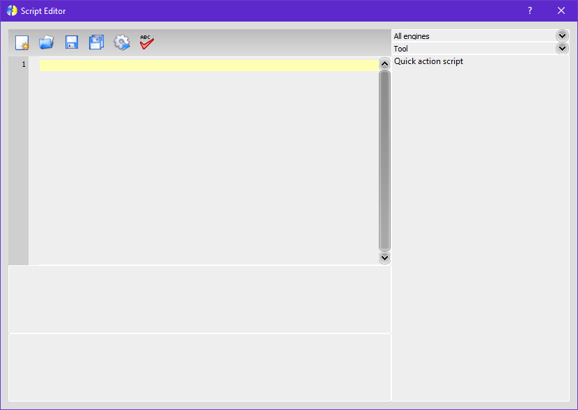

Script Editor
This editor is used to create, test and execute Lua scripts.
It is composed by a toolbar, a text editor for the script itself, a list of scripts on the right and the script output at bottom.
New
Creates a new script, erasing all contents of the text editor.
Open
Opens a script from a .lua file.
Save
Saves script in the current file, otherwise calls Save as.
Save as
Saves the script as a new .lua file in the specified location.
Run
Executes the script.
Save for translation
Saves a .ts file for internationalization of this script. You must use Qt Linguist to translate as usual.
See Scripting System for details about all available functions.